Les lois de l’électrocinétique ou lois de Kirchhoff se résument en deux lois : la loi
des nœuds et la loi des mailles.
Introduction
Réseau électrique
Un réseau électrique (ou circuit électrique) est un ensemble d’éléments présentant des
propriétés électriques, reliés entre eux par des conducteurs que l’on considérera parfaits
(conductivité infini). Les lois de l’électricité permettent de trouver la façon dont les
courants et les potentiels électriques se répartissent au sein de ce circuit.
Lorsque les grandeurs électriques (tensions et intensités électriques) ne varient pas dans
le temps, on parle de régime continu ; le régime variable désigne la situation
contraire.
Approximation des régimes quasi stationnaires (ARQS)
En régime variable, les fluctuations de courant se propagent à une vitesse proche de la
vitesse de la lumière. Pour des circuits de taille raisonnable, la durée de propagation
\(\tau\) est très petite devant le temps caractéristique \(T\) des fluctuations (période du
signal s’il est périodique). Il est alors légitime de négliger \(\tau\) devant
\(T\) ; c’est ce qu’on appelle l’approximation des régimes quasi-stationnaires.
Nous admettrons que les lois des régimes permanents restent valables en régime variable si
l’on peut considérer les phénomènes de propagation négligeables. Notamment, dans une branche
d’un circuit, à un instant donné, le courant a la même intensité en tout point.
Dipôle et conventions
Un dipôle électrocinétique est une partie d’un circuit qui peut être reliée au reste du
circuit par deux fils. On décrit le comportement d’un dipôle par sa relation courant-tension
\((i=f(u))\) dans une convention précisée. Il en existe deux :
dans la convention récepteur, si le courant algébrique est orienté dans le sens AB,
alors \(u=V_A-V_B\)
dans la convention générateur, si le courant algébrique est orienté dans le sens AB,
alors \(u=V_B-V_A\)
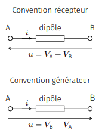
Les différentes conventions.
Dans ce chapitre nous limitons notre propos à l’étude de dipôles électrocinétiques dont la
relation entre \(u\) et \(i\) est, soit linéaire, soit affine (\(i=a\times u+b\)).
Loi des nœuds
Énoncé
Dans chaque branche d’un réseau électrique, on définit un sens positif (le choix est
arbitraire) du courant et une intensité algébrique \(i\). Si \(i \gt 0\), le courant circule
dans le sens positif ; si \(i \lt 0\), le courant circule dans le sens négatif.
Un nœud est la rencontre d’au moins trois conducteurs électriques.
Considérons \(n\) branches de conducteurs liées par un nœud \(N\).
Définissons \(i_k\), l’intensité algébrique du courant de la \(k^e\) branche.
La loi des nœuds traduit la conservation de la charge en régime stationnaire et exprime le
fait que la charge ne peut pas s’accumuler en \(N\) : le courant électrique qui
arrive en \(N\) doit être compensé par le courant qui sort.
Cette loi, rigoureusement vérifiée en régime continu, est admise en régime variable dans le
cadre de l’approximation des régimes quasistationnaires.
En chaque nœud d’un circuit, on a :
$$
\quad \sum_{k=1}^{n} \epsilon_k i_k = 0
$$
où \(\epsilon_k = +1\) quand le courant est entrant et où \(\epsilon_k = -1\) quand le
courant est sortant.
Exemple
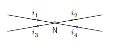
Illustration de la loi des nœuds.
Considérons le schéma ci-dessus. La loi des nœuds exprimée en \(N\) donne :
$$
i_1 + i_2 + i_3 - i_4 = 0
$$
soit :
$$
i_4 = i_1 + i_2 + i_3
$$
Ce qui traduit bien le fait que le courant qui arrive en \(N\) est égale au courant qui en
sort.
Loi des mailles
Énoncé
Le transport électrique est assuré grâce aux forces électrostatiques.
On peut dès lors définir un potentiel électrique en chaque point du circuit. Lorsque le
potentiel électrique est le même partout, le réseau est à l’équilibre et n’est le siège
d’aucun courant électrique. En revanche, lorsque le potentiel électrique n’est plus
uniforme, le conducteur n’est plus à l’équilibre ce qui génère un courant électrique (qui
tente de rétablir l’équilibre). Aux extrémités d’une branche il existe alors une tension qui
dépend du courant électrique et de la nature du dipôle traversé par ce courant.
Il est traditionnel de représenter une tension \(u_{AB} = V_A - V_B\) par une flèche allant
de \(B\) vers \(A\).
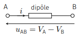
Représentation d’une tension.
Une maille est un circuit fermé qui part d’un nœud donné pour revenir à ce même nœud.
Prenons une maille et choisissons arbitrairement un sens de parcours.
Visitons toutes les branches de la maille et associons un coefficient \(\epsilon_k = +1\) à
la tension rencontrée lorsqu’elle est orientée (sa flèche représentative) dans le sens de
parcours et un coefficient \(\epsilon_k =-1\) lorsque la tension rencontrée est orientée
dans l’autre sens. La loi des mailles se traduit alors par :
$$
\quad \sum_{k=1}^{n}{\epsilon_k u_k} = 0
$$
Exemple
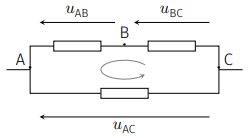
Illustration de la loi des mailles.
Dans le circuit ci-dessus, appliquons la loi des mailles en parcourant la maille dans le
sens indiqué. On trouve :
$$
1 \times u_{BC} + 1 \times u_{AB} - 1 \times u_{AC} = 0
$$
soit
$$
u_{AC} = u_{AB} + u_{BC}
$$
On retrouve d’ailleurs une loi identique à celle de Chasles propre aux vecteurs.
Potentiel d’origine
Il existe une indétermination du potentiel ; ceci reste vrai au sein d’un réseau
électrique. Cependant, une convention souvent rencontrée consiste à poser l’origine du
potentiel au niveau du pôle négatif de l’alimentation. Ce potentiel de référence est appelée
masse du circuit.
Un équipement sous tension présente, en général, une connexion physique avec la terre. Elle
permet de protéger l’utilisateur et également d’évacuer les courants induits par la foudre.
Cependant, il ne faut pas confondre ligne de terre et ligne de masse, car le potentiel de la
terre n’est pas nécessairement constant et sa fonction est uniquement liée à la sécurité.
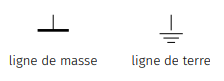
Pictogramme des lignes de masse et de terre.
Puissance reçue par un dipôle
On note \(\mathcal{P}(t)\) la puissance électrique reçue à l’instant \(t\) par un dipôle
électrocinétique. La puissance électrique se mesure en watt (symbole : W) et on
rappelle que \(1 W = 1 J.s^-1\).
Entre \(t\) et \(t + dt\), la quantité de charge \(dq = i(t)dt\) arrive en une extrémité du
dipôle (point \(A\)) pendant que la même quantité nous sommes en régime
stationnaire ou quasi-stationnaire en sort par l’autre extrémité (point \(B\)).
Cette quantité de charge possède une énergie électrique \(\mathcal{E}(A) = dqV_A\) en \(A\)
et \(\mathcal{E}(B) = dqV_B\).
Remarquons qu’entre \(A\) et \(B\) l’énergie des charges n’a pas changé du fait que la
distribution des charges et du potentiel est la même entre \(t\) et \(t + dt\).
Autrement dit, d’un point de vue énergétique, tout se passe comme si l’on avait transporté
la charge \(dq\) de \(A\) en \(B\). Pendant ce transport la charge perd une énergie
potentielle \(dqV_A - dqV_B\) qu’elle cède intégralement au dipôle. Celui-ci reçoit donc une
quantité d’énergie :
$$
\quad \delta{W} = dqV_A - dqV_B = i(t)u_{AB}(t)dt
$$
La puissance électrocinétique reçue (l’énergie reçue par unité de temps) par un dipôle à
l’instant \(t\), soumis à une tension \(u(t)\) et traversé par un courant d’intensité
\(i(t)\) vaut, en convention récepteur :
$$
\quad \mathcal{P}(t) = u(t)i(t)
$$
Si \(\mathcal{P}(t) \gt 0 \), le dipôle absorbe effectivement, à l’instant \(t\), de
l’énergie électrique. On dit que le dipôle a un caractère récepteur. Cette énergie reçue par
le dipôle est soit stockée, soit convertie sous une autre forme (effet Joule dans une
résistance, énergie mécanique dans un moteur).
Si \(\mathcal{P}(t) \lt 0 \), le dipôle fournit effectivement de l’énergie électrique. On
dit que le dipôle a un caractère générateur (batterie).
Phénomènes résistifs
Loi d’ohm, effet Joule
Un conducteur ohmique obéit à la loi d’Ohm :
$$
\quad u(t) = R \times i(t)
$$
où \(R\) désigne la résistance du conducteur ohmique dont la valeur dépend de la géométrie
et de la conductivité du matériau conducteur.
La résistance s’exprime en ohm (symbole \(\Omega\)). La caractéristique d’un conducteur
ohmique est donc une droite passant par l’origine.
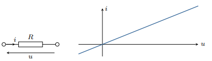
Schéma et caractéristique d’un conducteur ohmique.
Un circuit uniquement composé de résistances ne peut pas produire de courant. On dit que le
conducteur ohmique est un dipôle linéaire passif.
La puissance reçue par un conducteur ohmique vaut :
$$
\quad \mathcal{P} = u \times i = R \times i^2
$$
Le conducteur ne peut que recevoir de l’énergie électrique, sans pouvoir en fournir. On
parle alors de récepteur électrique. En revanche cette énergie électrique est convertie
essentiellement sous forme de chaleur si le conducteur n’est pas thermiquement isolé.
Cette dissipation de l’énergie électrique sous forme de chaleur porte le nom d’effet Joule.
Cet effet est mis à profit dans les bouilloires électriques par exemple.
Notez qu’en général le conducteur voit sa température varier, ce qui fait augmenter son
enthalpie. Dans ce cas, une partie de l’énergie électrique sert à augmenter l’énergie
interne du conducteur et à le dilater.
Association de résistances
Tout dipôle constitué uniquement de résistances équivaut à une résistance équivalente
\(R_{eq}\).
Résistances en série
On dit que des résistances sont en série lorsqu’elles sont traversées par le même courant
électrique.
Considérons \(N\) résistances montées en séries.
Notons \(i\) l’intensité du courant.
Notons \(u_k\) la tension aux bornes du \(k^e\) conducteur ohmique de resistance \(R_k\).
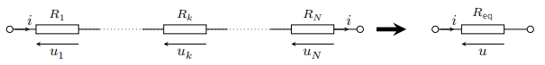
Conducteurs ohmiques en série.
On a :
$$
u = R_{eq} \times i = \sum_{k=1}^{N}{u_k} = i \times \sum_{k=1}^{N}{R_k}
$$
Par conséquent, on obtient :
$$
\quad R_{eq} = \sum_{k=1}^{N}{R_k}
$$
Résistances en parallèle
On dit que des résistances sont associées en parallèle lorsqu’elles sont soumises à la même
tension.
Considérons \(N\) résistances montées en parallèle.
Notons \(u\) la tension commune.
Notons \(i_k\) l’intensité du courant traversant le \(k^e\) conducteur ohmique de resistance
\(R_k\).
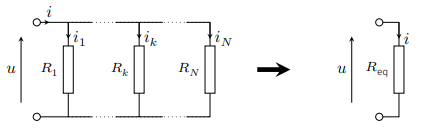
Conducteurs ohmiques en parallèle.
On a :
$$
i = \frac{u}{R_{eq}} = \sum_{k=1}^{N}{i_k} = u \times \sum_{k=1}^{N}{\frac{1}{R_k}}
$$
Par conséquent, on obtient :
$$
\quad \frac{1}{R_{eq}} = \sum_{k=1}^{N}{\frac{1}{R_k}}
$$
Ponts diviseurs
Considérons deux résistances \(R_1\) et \(R_2\) en série soumises à une tension \(u\).
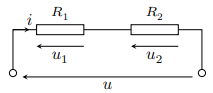
Pont diviseur de tension.
En vertu de la loi des mailles, on a \(u = u_1 + u_2 = \left(R_1 + R_2\right)i\). La tension
aux bornes de chaque résistance \(u_k = R_k i\) est alors une fraction de la tension \(u\).
$$
\quad u_k = \frac{R_k}{R_1 + R_2}u
$$
On parle alors de montage diviseur de tension.
Considérons deux résistances \(R_1\) et \(R_2\) en parallèle alimentées par un courant
global \(i\).
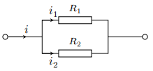
Pont diviseur de courant.
Définissons les conductances \(G_k = 1/ R_k\) exprimées en siemens (symbole : S). Le
courant traversant chacune des résistances a pour intensité \(i_k = G_k u\) et
\( u = i/\left(G_1 + G_2\right)\). En conséquence, on obtient :
$$
\quad i_k = \frac{G_k}{G_1 + G_2}i
$$
Le courant se répartie au prorata des conductances et l’on parle de montage diviseur de
courant.
Modélisation linéaire d’un dipôle actif
Contrairement aux dipôles passifs, les dipôles actifs produisent une tension en circuit
ouvert. On distingue les sources (piles, alimentation stabilisée, batteries en utilisation,
etc.) et les récepteurs (électrolyseurs, batteries en charge, moteurs électriques).
Source de tension
Source de tension idéale
Une source de tension permet aux charges de remonter le potentiel grâce à l’existence
d’un champ électromoteur au sein de la source.
Ce champ électromoteur produit une tension, dite force électromotrice (f.é.m) que nous
noterons \(e\).
La caractéristique d’une source de tension idéale s’écrit en convention
générateur :
$$
\quad u = e \quad \forall i
$$
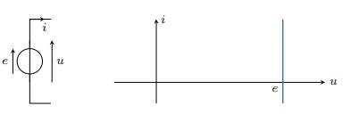
Schéma et caractéristique d’une source idéale de tension.
Source de tension réelle
Pour tenir compte des pertes par effet Joule d’une source de tension, on modélise la source
par une source idéale en série avec une résistance \(r\) dite résistance interne. La
caractéristique s’écrit alors :
$$
\quad u = e -ri
$$
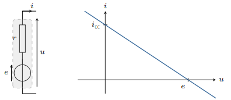
Schéma et caractéristique d’une source réelle de tension.
Il ressort de cette caractéristique que la source de tension acquiert un comportement
quasi-idéal à la condition que \(ri \ll e\) : le courant débité par la source doit
rester faible. C’est ce que l’on obtient lorsque l’on branche un voltmètre aux bornes de la
source : la résistance interne du voltmètre étant très grande, le courant débitée est
quasi nul de sorte que le voltmètre indique la f.é.m de la source. Par ailleurs, lorsque
l’on court-circuite la source en reliant ses deux bornes (\(u=0\)), on trouve un courant de
court-circuit (\(i_{cc}=e/r\)).
Puissance d’une source de tension
Du point de vue énergétique, la puissance délivrée par la source de tension
vaut :
$$
\quad \mathcal{P} = ui = ei - ri^2
$$
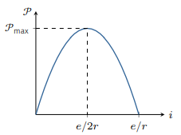
Puissance produite par une source de tension en fonction du courant
débité.
Ainsi, la puissance atteint une valeur maximale lorsque \(i = e/2r\). Une source réelle de
tension délivre donc une puissance maximale :
$$
\quad \mathcal{P}_{max} = \frac{e^2}{4r}
$$
Source de courant
Source de courant idéale
Le rôle d’une source de courant est d’imposer un courant constant indépendamment de la
tension qui règne à ses bornes. Une source de courant idéale aura la caractéristique
suivante :
$$
\quad i = i_0 \quad \forall u
$$
où \(i_0\) désigne le courant électromoteur (c.é.m).
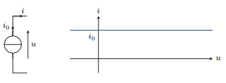
Schéma et caractéristique d’une source idéale de courant.
Source de courant réelle
Pour tenir compte des pertes par effet Joule d’une source de courant réelle, on la modélise
par une source idéale en parallèle avec une conductance interne \(g\). La caractéristique
s’écrit alors :
$$
\quad i = i_0 - gu
$$
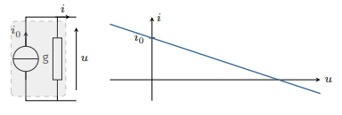
Schéma et caractéristique d’une source idéale de courant.
On notera qu’une source de courant se rapproche d’une source de courant idéale quand sa
conductance interne tend vers 0 (\(r \rightarrow \infty\)).
Puissance d’une source de courant
La puissance fournie par une source de courant réelle vaut :
$$
\quad \mathcal{P} = ui = ui_0 - gu^2
$$
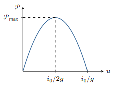
Puissance produite par une source de courant en fonction du tension à ses
bornes.
Ainsi, la puissance atteint une valeur maximale lorsque \(u = i_0/2g\). Une source réelle de
courant délivre donc une puissance maximale :
$$
\quad \mathcal{P}_{max} = \frac{{i_0}^2}{4g}
$$
Représentations de Thévenin et Norton
Considérons une source de tension réelle dont la modélisation linéaire est donnée par
\(u = e -ri\). Cette caractéristique peut se réécrire \(i = e/r - gu\) avec \(g = 1/r\). En
d’autres termes, une source de tension réelle peut s’interpréter comme une source de courant
de c.é.m \(i_0 = e/r\) et de conductance \(g = 1/r\). Ainsi, toute source linéaire présente
deux représentations possibles :
la modélisation de Thévenin correspondant à une source de tension idéale en série avec
une résistance
la modélisation de Norton correspondant à une source de courant idéale en parallèle
avec une conductance
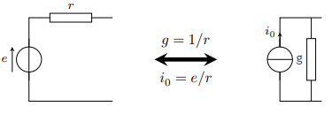
Équivalence Thévenin Norton.
Récepteur actif
Étudions le cas d’une batterie chimique. On distingue deux comportements : la
décharge ou la charge. Lorsque la batterie se décharge, elle est alors source d’énergie et
est modélisée par une source de tension de f.é.m \(e\) et de résistance interne \(r\). On a
en convention générateur :
$$
u = e - ri
$$
et
$$
\mathcal{P} = ei - ri^2 \gt 0
$$
En fonctionnement générateur, la puissance fournie est positive et le sens du courant est
dictée par la polarité de la source.
En revanche, lorsque la batterie est en charge, le courant est dans l’autre sens. Dans ce
cas, le dipôle reçoit de la puissance :: on dit qu’il s’agit d’un récepteur actif et
\(e\) est désigné par le terme force contreélectromotrice (f.c.é.m). En convention
récepteur, on écrira donc :
$$
u = e + ri
$$
et la puissance fournie à la batterie vaut :
$$
\mathcal{P} = ei + ri^2
$$
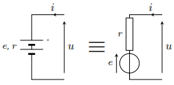
Batterie en charge.
Une partie de cette puissance (\(ri^2\)) est dissipée par effet joule et l’autre partie
(\(ei\)) est convertie en énergie chimique. On peut d’ailleurs définir un rendement de
conversion :
$$
\eta = \frac{\mathcal{P}_{convertie}}{\mathcal{P}_{fournie}} = \frac{e}{e+ri}
$$
Finalement, une batterie est une source de tension qui peut fonctionner, soit en générateur,
soit en récepteur, la polarité étant fixé par la borne positive de la batterie. On parle
alors de récepteur réversible. Les accumulateurs, les électrolyseurs ont ce comportement.
Il existe cependant des dipôles actifs dont le comportement est toujours récepteur quel que
soit le sens du courant. La polarité de la f.c.é.m est toujours orientée à contre sens du
courant. On parle de récepteur non réversibles (ou non polarisés). Le moteur à courant
continu en est un exemple.
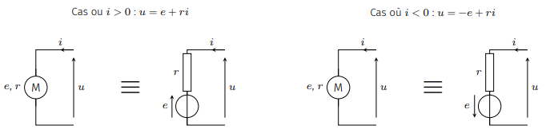
Moteur à courant continu.
Loi de Pouillet
Imaginons une maille constituée de dipôles actifs (en représentation de Thévenin) et de
résistances. Appelons \(R\) la somme de toutes les résistances (résistances internes
inclues).
Imposons un sens positif du courant et notons \(i\) l’intensité algébrique du courant qui
circule dans la maille.
Notons \(e_k\) les f.é.m (orientées dans le sens positif) et \(e'_k\) les f.c.é.m (orientés
dans le sens contraire).
La loi des mailles permet d’écrire :
$$
\sum_{k}{e_k} - \sum_{k}{e'_k} - Ri = 0
$$
Ce qui donne la loi connue sous le nom de loi de Pouillet :
$$
\quad i = \frac{\sum_{k}{e_k} - \sum_{k}{e'_k}}{R}
$$
Méthodes de résolution
Utilisation de la loi des mailles
Dans un réseau constitué de \(b\) branches et \(n\) nœuds, il y a \(N=b-n+1\) courants
indépendants. En effet, les \(b\) courants circulant dans les \(b\) branches vérifient
\(n-1\) relations (lois des nœuds). Il nous faut donc \(N\) relations pour déterminer ces
inconnues. Ces relations sont obtenues en appliquant la loi des mailles dans \(N\) mailles
indépendantes associées aux caractéristiques des dipôles. On obtient alors un système
d’équations à résoudre.
Méthodologie :
Parcourir toutes les branches du réseau en définissant les courants algébriques et en
appliquant le plus possible la loi des nœuds à chaque fois que l’on rencontre un
nœud.
Compter le nombre \(N\) de courants inconnues puis choisir \(N\) mailles avec un sens
de parcours.
Écrire \(N\) lois des mailles en utilisant les caractéristiques des dipôles. Notez que
si une branche contient une source de courant, l’intensité électrique dans cette branche
est alors déterminée, mais la tension aux bornes de la source est alors une
inconnue.
Résoudre le système d’équations.
Cette méthode présente l’avantage de déterminer toutes les grandeurs électriques et
s’applique à tous les réseaux électriques. Si le circuit contient uniquement des dipôles
linéaires, le système d’équations obtenu est alors linéaire, ce qui facilite sa résolution.
Équivalence Thévenin-Norton
L’inconvénient majeur de la méthode précédente est qu’elle nécessite de résoudre un système
de \(N\) équations, même si l’on ne cherche qu’une seule grandeur électrique ; le
risque d’erreur de calcul peut devenir important.
Pour remédier à ce défaut, on peut utiliser de façon judicieuse l’équivalence électrique
entre une source de tension réelle et une source de courant réelle. En associant les
résistances quand c’est possible et en répétant plusieurs fois la transformation
Thévenin-Norton, on peut simplifier une partie du réseau électrique étudié, et donc diminuer
le nombre de mailles. Quand le but est de calculer les grandeurs électriques relatives à une
branche particulière, cette méthode est à envisager.
Théorème de superposition
Dans un circuit constitué de dipôles linéaires, l’intensité circulant dans une branche
(respestivement la tension d’une branche) est égale à la somme algébrique des intensités
(respestivement tensions) produites par chaque source supposée seule active, les autres
étant éteintes.
Pour éteindre une source de tension, on la remplace par un fil (\(e=0\)).
Pour éteindre une source de courant, on la remplace par un interupteur ouvert
(\(i_0=0\)).
Théorème de Millman
Considérons un nœud \(N\) auquel sont reliés \(n\) conducteurs ohmiques de résistances
\(R_k\) (\(k = 1...n\)). Le nœud \(N\) est de potientiel \(V_N\) et on note \(V_k\)
le potentiel électrique de l’autre borne de \(R_k\).
D’après le théorème de Millman, on a :
$$
V_N = \frac{\sum_{k=1}^{n}{V_k/R_k}}{\sum_{k=1}^{n}{1/R_k}}
$$